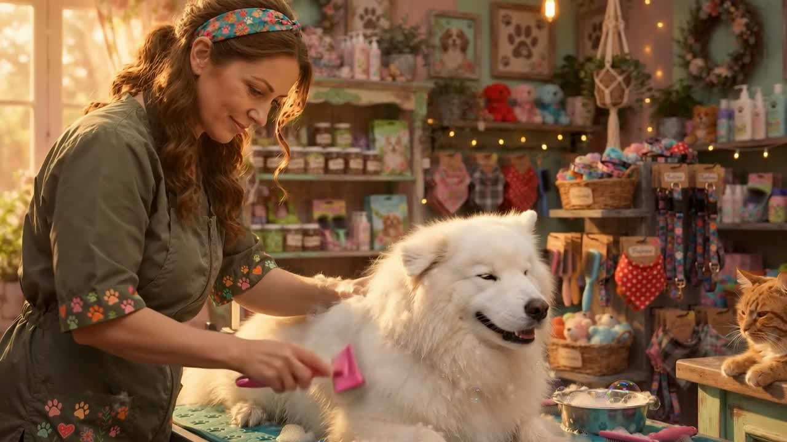

Dog Grooming
Full grooming care for dogs of all sizes — a wash, a tidy or styled cut, and a careful finish so they leave looking and feeling their best.
Battle Ground, Washington · Pet Groomer
Dog and cat grooming and a neighborhood pet boutique on Main Street — where friendly groomers take good care of every pet, anxious ones included.

710 E Main StAbout the boutique
Wags N’ Whiskers is a pet boutique and grooming shop in the heart of Battle Ground. Pets come in for a bath, a brush, and a proper groom — and head home looking and smelling their best.
Reviewers keep coming back for the same reasons: a clean facility, a friendly team, and groomers who are patient with nervous pets. Walk in for the boutique, stay for the care.
Services
Call for current availability and pricing for your pet’s size and coat.
Full grooming care for dogs of all sizes — a wash, a tidy or styled cut, and a careful finish so they leave looking and feeling their best.
Gentle grooming for cats, too — a service local cat owners say can be hard to find nearby. Patient handling in a calm boutique setting.
A freshen-up between full grooms: a good wash, brush-out, and tidy so coats stay clean, soft, and smelling great.
Browse the boutique in store for pet goods and gifts, with delivery available — plus friendly advice from the team while you shop.
Reviews
“They did so good! She looks so clean I couldn’t find a cat groomer anywhere in Vancouver and walked by one day and they gave me all the info I needed. Thanks guys!”
“We’ve been going to Wags N’ Whiskers for quite some time now and I can’t imagine going anywhere else. Our boy has anxiety and they always take good care of him.”
“The Best Groomers Around! We cannot say enough wonderful things about Wags N’ Whiskers Pet Boutique Pet Grooming! The facility is clean, the staff is friendly, and our two dogs love coming here.”
| Monday | Closed |
| Tuesday | 9 AM – 5 PM |
| Wednesday | 9 AM – 5 PM |
| Thursday | 9 AM – 5 PM |
| Friday | 9 AM – 5 PM |
| Saturday | 9 AM – 5 PM |
| Sunday | Closed |